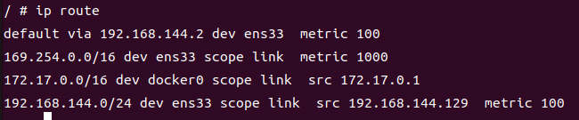

卸载已有 Docker
如果你已经安装过旧版的 Docker，可以先执行以下命令卸载旧版 Docker。
centos
sudo yum remove docker \
docker-client \
docker-client-latest \
docker-common \
docker-latest \
docker-latest-logrotate \
docker-logrotate \
docker-engine
ubuntu
sudo apt remove docker \
docker-client \
docker-client-latest \
docker-common \
docker-latest \
docker-latest-logrotate \
docker-logrotate \
docker-engine
安装 Docker
配置docker安装源
centos
sudo yum-config-manager \
--add-repo \
https://download.docker.com/linux/centos/docker-ce.repo
ubuntu
# 设置公钥证书
curl -fsSL https://download.docker.com/linux/ubuntu/gpg | sudo apt-key add -
# 设置仓库
sudo add-apt-repository "deb [arch=amd64] http://mirrors.aliyun.com/docker-ce/linux/ubuntu $(lsb_release -cs) stable"
安装docker
centos
sudo yum install docker-ce docker-ce-cli containerd.io
ubuntu
sudo apt install docker-ce docker-ce-cli containerd.io
启动 docker
sudo systemctl start docker
这里有一个国际惯例，安装完成后，我们需要使用以下命令启动一个 hello world 的容器。
sudo docker run hello-world
将当前用户添加到docker用户组
将用户添加到 docker 用户组
sudo usermod -aG docker $USER
-
sudo：这是一个命令行程序，允许授权的用户以另一个用户（通常是超级用户，即root）的安全权限来运行命令。在这里，它用于获取执行后续命令所需的权限。 -
usermod：这是一个用于修改用户账户设置的工具。它可以用来更改用户的登录名、家目录、用户组等。 -
-aG：这是usermod命令的两个选项的组合。-a选项表示将用户追加到指定的附加组中，而不是替换掉用户原来的组。-G选项后面跟的是要添加到用户上的组名列表，多个组名之间用逗号分隔，但在这个命令中，我们只指定了一个组名 docker。
注意，由于这里-a和-G是分开写的（-aG），并且紧跟在usermod后面，所以它们被当作一个组合选项来处理，专门用于追加用户到额外的组中。
-
docker：这是要添加用户到的目标用户组的名称。在这个上下文中，它指的是允许用户无需sudo即可执行Docker命令的组。 -
$USER：这是一个环境变量，它通常包含当前登录用户的用户名。在Shell脚本或命令行中，$USER会被替换成实际登录的用户名。这样，无论哪个用户执行这个命令，它都会将那个用户添加到docker组中。
注意：执行此命令后，您需要注销并重新登录，或者重启您的计算机，以便更改生效。这是因为用户组信息是在用户登录时从 /etc/passwd 和 /etc/group 等文件中读取的，并且这些更改不会立即反映到已经打开的会话中。
可以尝试 newgrp 命令来更新当前会话的组信息，但这通常不如注销并重新登录来得可靠。
newgrp docker
容器技术原理
chroot 是最早的容器雏形.
chroot 意味着切换根目录，有了 chroot 就意味着我们可以把任何目录更改为当前进程的根目录，也就是创建了一个与当前系统隔离的环境，在该环境 中运行的程序只能访问到该环境内的文件和目录结构。
chroot
什么是 chroot 呢？下面是 chroot 维基百科定义：
chroot 是在 Unix 和 Linux 系统的一个操作，针对正在运作的软件行程和它的子进程，改变它外显的根目录。一个运行在这个环境下，经由 chroot 设置根目录的程序，它不能够对这个指定根目录之外的文件进行访问动作，不能读取，也不能更改它的内容。
以下演示使用 ubuntu 系统
-
创建目录，作为 chroot 演示目录
mkdir rootfs -
从
docker导出一个基础镜像，并打包为tar格式,作为 演示cd rootfs docker export $(docker create busybox) -o busybox.tar tar -xf busybox.tar命令解析
- docker create busybox：这个命令会创建一个新的Docker容器，但不会启动它。busybox是一个非常小的Linux镜像，通常用于测试或作为容器的基础镜像。docker create命令会基于busybox镜像创建一个容器实例，但立即停止它，不会运行其中的任何进程。
- (docker create busybox)会被替换为docker create busybox命令的输出，即新创建的容器的ID。
- docker export <container_id> -o busybox.tar：这个命令的意图是将指定容器的文件系统导出为一个tar包。但是，在我们的命令中，<container_id>部分被替换成了$(docker create busybox)的输出，即容器的ID。理论上，如果直接使用容器ID，这个命令是有效的。
-
使用 ls 查看 rootfs 目录下内容
ls输出
bin busybox.tar dev etc home lib lib64 proc root sys tmp usr var -
使用
chroot命令把/home/what/rootfs作为 sh 进程的根目录sudo chroot /home/what/rootfs /bin/sh
使用 ls 查看 / 目录
ls /
这里可以看到当前进程的根目录已经变成了主机上的/home/what/rootfs目录。这样就实现了当前进程与主机的隔离。到此为止，一个目录隔离的容器就完成了。 -
查看路由信息
ip route
退出exit继续查看路由信息
ip route
两相对比，网络信息并没有隔离，实际上进程等信息也并未隔离，要想实现一个完整的容器还需要 Linux 的其他三项技术： Namespace 、 Cgroups 和 联合文件系统
Docker 是利用 Linux 的 Namespace 、Cgroups 和联合文件系统三大机制来保证实现的， 所以它的原理是：
- Namespace 做主机名、网络、PID 等资源的隔离，
- Cgroups 对进程或者进程组做资源（例如：CPU、内存等）的限制，
- 联合文件系统用于镜像构建和容器运行环境。
Namespace
Namespace 是 Linux 内核的一项功能，该功能对内核资源进行隔离，使得容器中的进程都可以在单独的命名空间中运行，并且只可以访问当前容器命名空间的资源。Namespace 可以隔离进程 ID、主机名、用户 ID、文件名、网络访问和进程间通信等相关资源。
Docker 主要用到以下五种命名空间。
- pid namespace ： 用于隔离进程ID
- net namespace ： 用于隔离网络接口，在虚拟的 net namespace 内用户可以拥有自己独立的IP、路由端口等
- mnt namespace ：文件系统挂载点隔离
- ipc namespace ：信号量、消息队列、和共享内存的隔离
- uts namespace ：主机名和域名的隔离
Cgrpups
Cgroups 是linux 内核功能，可以限制隔离进程资源的使用情况（CPU、内存、磁盘、网络等）。在容器实现中，Cgrpups 通常用来限制容器的 CPU 和内存等资源的使用
联合文件系统
联合文件系统又叫 UnionFS ,是一种通过穿件文件层进程操作的文件系统，因此，联合文件系统非常轻快。
Docker 使用联合文件系统作为容器构建层，使得容器可以实现写时复制以及镜像的分层构建和存储。常用的联合文件系统有 AUFS 、 Overlay 、 Devicemapper 等